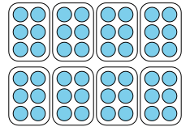
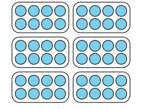

El propósito de esta lección es que los estudiantes interpreten descripciones o dibujos de situaciones de división y reconozcan si implican encontrar un número desconocido de grupos o encontrar un número desconocido de objetos en cada grupo.
Narrativa de la lección.
Los estudiantes ven los dos tipos de situaciones de división lado a lado en esta lección. Comprenden que la división consiste en encontrar el número en cada grupo o el tamaño de cada grupo y pueden relacionar las situaciones de división con dibujos. Los estudiantes aprenden que el mismo dibujo puede corresponder a cualquiera de los dos tipos de situaciones de división. Esto se debe a que los dibujos representan el resultado final después de que se ha realizado la división. A partir del dibujo, no podemos saber si se conocía el número de grupos o el número de objetos en cada grupo. El símbolo de división, \(\div\text{,}\) se introduce en la síntesis de la lección.
Preguntas de reflexión.
¿Cómo están aprovechando los estudiantes los dibujos que utilizaron al multiplicar para resolver problemas de división?
SubsubsecciónCalentamiento (10 mins)
Tiempo recomendado.
10 minutos
Narrativa.
El propósito de esta conversación numérica es generar estrategias y comprensiones que los estudiantes tienen para hacer sumas hasta de 1,000, especialmente al ajustar los números en una suma para que sea más fácil sumarlos. Estas comprensiones ayudan a los estudiantes a desarrollar fluidez para hacer sumas hasta de 1,000.
Los estudiantes buscan y utilizan la estructura (MP7) cuando se dan cuenta que el valor de la suma no cambia cuando se quita el mismo valor de un sumando y se agrega al otro.
Lanzamiento.
Muestre una expresión.
“Hagan una señal cuando tengan una respuesta y puedan explicar cómo la obtuvieron.”
1 minuto: tiempo de reflexión en silencio
Desarrollo de la actividad.
Registre respuestas y estrategias.
Mantenga las expresiones y el trabajo visible.
Repita con cada expresión.
Calentamiento10.Conversación numérica: Cuanto más cambien las cosas....
Encuentra mentalmente el valor de cada expresión.
\(\displaystyle 120 + 120\)
\(\displaystyle 121 + 119\)
\(\displaystyle 125 + 115\)
\(\displaystyle 129 + 111\)
Solución.
Ejemplos de respuestas
240. Simplemente dupliqué 120.
240. Me di cuenta de que 121 es 1 más que 120 y 119 es 1 menos que 120, así que el valor es el mismo que el de \(120+120\text{.}\)
240. Le quité 5 a 125 y se lo sumé a 115. Así otra vez tenía \(120+120\text{.}\)
240. Le quité 9 a 129 y se lo sumé a 111. Así otra vez tenía \(120+120\text{.}\)
Síntesis de la actividad.
“¿Por qué creen que todas estas expresiones tienen el mismo valor?” (Aunque cada número está cambiando, se está agregando la misma cantidad a un número y se está restando del otro número, por lo que el total es el mismo.)
Considere preguntar:
“¿Alguien puede expresar el razonamiento de de otra forma?”
“¿Alguien usó la misma estrategia, pero la explicaría de otra forma?”
“¿Alguien pensó en el problema de otra forma?”
“¿Alguien quiere agregar algo a la estrategia de ?”
SubsubsecciónActividad 1 (10 mins)
Tiempo recomendado.
10 minutos
Narrativa.
El propósito de esta actividad es que los estudiantes representen físicamente la diferencia entre hacer 2 grupos y hacer grupos de 2. Diez estudiantes se dividirán en 2 grupos y luego en grupos de 2. El resto de los estudiantes observarán cómo se formaron los grupos para resaltar la diferencia entre los problemas de "¿cuántos grupos?" y los problemas de "¿cuántos en cada grupo?".
Lanzamiento.
Grupos de 2
Invite a 10 estudiantes a venir al frente de la clase.
“Estos estudiantes se van a organizar en grupos y lo harán de diferentes maneras. Si están observando, anoten sus observaciones acerca de cómo forman los grupos.”
Desarrollo de la actividad.
Pida a los 10 estudiantes que se pongan en grupos de 2.
Dé a los observadores la oportunidad de tomar notas.
Pida a los 10 estudiantes que se pongan en 2 grupos.
Dé a los observadores la oportunidad de tomar notas.
Pida a los estudiantes que regresen a sus asientos.
“Hablen con un compañero sobre lo que notaron acerca de cómo los estudiantes se organizan en grupos de 2 y en 2 grupos.”
2-3 minutos: discusión en parejas
Actividad11.Grupos de estudiantes.
¿Qué observaste acerca de cómo los estudiantes se organizaron en grupos de 2?
¿Qué observaste acerca de cómo los estudiantes se organizaron en 2 grupos?
Solución.
Ejemplos de respuestas:
Simplemente formaron parejas.
No necesitaban saber cuántos grupos tenían que formar, solo tenían que asegurarse de que hubiera 2 estudiantes en cada grupo.
Al final, quedaron 5 grupos de 2 estudiantes.
Ejemplos de respuestas:
Tenían que averiguar cuántos estudiantes había en cada grupo.
Pusieron a las personas una por una en los grupos.
Al final, quedaron 2 grupos de 5 estudiantes.
Síntesis de la actividad.
Pida a los estudiantes que observaron que compartan lo que notaron.
Destaque las ideas que ayuden a aclarar las diferencias entre "¿cuántos grupos?" y "¿cuántos en cada grupo?"
SubsubsecciónActividad 2 (15 mins)
Tiempo recomendado.
10 minutos
Narrativa.
El propósito de esta actividad es que los estudiantes relacionen una situación de división con un diagrama de grupos iguales. Los estudiantes deben ser capaces de explicar por qué la situación corresponde al diagrama A, que muestra 2 grupos de 6, y por qué no corresponde al diagrama B, que muestra 6 grupos de 2.
Esta actividad utiliza MLR1: Más fuerte y cada vez más claro.
Avances: lectura, escritura
Lanzamiento.
Grupos de 2
“Hoy vamos a examinar dibujos que representan situaciones de división. Tómense un minuto para leer esta situación.”
1 minuto: tiempo de trabajo individual
Desarrollo de la actividad.
“Individualmente, decidan cuál dibujo corresponde a esta situación y luego expliquen su razonamiento.”
2-3 minutos: tiempo de trabajo individual
Actividad12.Los lápices de colores de Elena.
Elena tiene 12 lápices de colores. Ella tiene 2 cajas y quiere poner el mismo número de lápices en cada caja. ¿Cuántos lápices irán en cada caja?
¿Cuál dibujo corresponde a la situación? Explica tu razonamiento.
A
B
Solución.
A.
El dibujo B no es correcto pues muestra 6 grupos de 2 lápices de colores. Eso sería como si ella tuviera 6 cajas, en vez de 2 cajas.
Síntesis de la actividad.
MLR1 Más fuerte y cada vez más claro
“Compartan su respuesta con su compañero. Por turnos, uno habla y el otro escucha. Si es su turno de hablar, compartan sus ideas y lo que han escrito hasta el momento. Si es su turno de escuchar, hagan preguntas y comentarios que ayuden a su compañero a mejorar su trabajo.”
2-3 minutos: discusión estructurada en pareja
Repetir con 2 compañeros diferentes.
“¿Cuál dibujo decidieron que corresponde? ¿Cómo lo saben?”
“¿Cómo saben que el otro dibujo no corresponde a esta situación?” (El dibujo B son 6 grupos de 2 lápices de colores. Eso sería como si tuviera 6 cajas, no 2 cajas.)
SubsubsecciónActividad 3 (15 mins)
Tiempo recomendado.
15 minutos.
Narrativa.
El propósito de esta actividad es que los estudiantes relacionen situaciones de división y diagramas de grupos iguales (MP2). Cada diagrama dado corresponde a dos situaciones diferentes. Los estudiantes aprenden que el mismo diagrama puede representar tanto un problema de "¿cuántos grupos?" como un problema de "¿cuántos en cada grupo?" porque el diagrama muestra el resultado final, no cómo se hicieron los grupos. Cuando los estudiantes interpretan un diagrama como que representa dos tipos de historias diferentes, indican claramente cómo cada parte del diagrama corresponde a la historia, incluyendo lo que corresponde a lo desconocido en la historia (MP6).
Lanzamiento.
Grupos de 2
“Vamos a examinar algunas situaciones que incluyen herramientas para escribir o dibujar. ¿Qué cosas usamos para escribir o dibujar?”
30 segundos: tiempo de reflexión en silencio
Compartir y registrar las respuestas.
Desarrollo de la actividad.
“Van a asociar seis situaciones con dibujos que podrían representarlas. Tómense unos minutos para decidir cuál dibujo corresponde a cada situación.”
3-5 minutos: tiempo de trabajo independiente
“Compartan sus ideas con su compañero.”
2-3 minutos: discusión en pareja
Actividad13.¿Cuál dibujo corresponde?
Asocia cada situación con un dibujo. Prepárate para explicar tu razonamiento.
Mai tiene 8 marcadores y varias cajas. Ella pone 4 marcadores en cada caja. ¿Cuántas cajas con marcadores hay?
Kiran tiene 20 bolígrafos y varias mesas. Él pone 2 bolígrafos en cada mesa. ¿En cuántas mesas puede poner bolígrafos?
Lin tiene 8 lápices de colores. Ella los pone en 2 bolsas. En cada bolsa pone el mismo número de lápices de colores. ¿Cuántos lápices de colores habrá en cada bolsa?
Priya tiene 15 crayones y varios pupitres. Ella pone 5 crayones en cada pupitre. ¿Cuántos pupitres tendrán crayones?
Noah tiene 20 lápices y 10 cajas. Él pone el mismo número de lápices en cada caja. ¿Cuántos lápices habrá en cada caja?
Jada tiene 15 marcadores y 3 mesas. Ella pone el mismo número de marcadores en cada mesa. ¿Cuántos marcadores habrá en cada mesa?
A.
B.
C.
Solución.
Respuesta del enunciado
A
B
A
C
B
C
Para los estudiantes con dificultades.
Si los estudiantes dicen que el dibujo no puede representar ambas situaciones, considere preguntar:
“¿Cómo podríamos hacer un dibujo para cada situación?”
“¿Qué podríamos dibujar primero para representar la primera situación en la que hay 8 objetos? ¿Y para la segunda situación en la que hay 8 objetos?”
Síntesis de la actividad.
Invite a los estudiantes a compartir qué dibujo corresponde a cada situación.
Enfóquese en un dibujo y las dos situaciones que puede representar, como:
Mai tiene 8 marcadores. Ella pone 4 marcadores en cada caja. ¿Cuántas cajas de marcadores hay?
Lin tiene 8 lápices de colores. Ella los pone en 2 bolsas. Cada bolsa tiene la misma cantidad de lápices de colores. ¿Cuántos lápices de colores habrá en cada bolsa?
“¿Cómo puede el mismo dibujo representar ambas situaciones?” (No vimos cómo se hicieron los grupos, pero al final se hicieron la misma cantidad y tamaño de grupos en ambas situaciones. El dibujo puede representar poner 8 marcadores en cajas con 4 marcadores en cada caja y encontrar que caben en 2 cajas. También puede representar poner 8 lápices en 2 bolsas con la misma cantidad de lápices en cada bolsa y encontrar que se pueden poner 4 lápices en cada bolsa.)
Desarrollo de lenguaje matemático.
Apoyos para la discusión (MLR8). Los estudiantes deben turnarse para encontrar una correspondencia y explicar su razonamiento a su compañero.
Muestre el siguiente esquema de oración para que todos lo vean: "Observé ___, entonces asocié . . ."
Motívelos a desafiarse mutuamente cuando no estén de acuerdo.
Acceso a estudiantes con discapacidades.
Proporcione acceso al generar interés. Aproveche la elección en torno al desafío percibido. Invite a los estudiantes a seleccionar al menos 3 de los 6 problemas para completar.
Apoya la accesibilidad para: Organización, Atención, Habilidades socioemocionales.
SubsubsecciónSíntesis de la lección (5 mins)
Tiempo recomendado: 10 mins.
“Hoy asociamos dibujos con situaciones de división. Hay dos tipos de situaciones de división y hoy vimos que el mismo dibujo puede representar ambos tipos de situaciones.”
Considera este grupo:
Mai tiene 8 marcadores y varias cajas. Ella pone 4 marcadores en cada caja. ¿Cuántas cajas con marcadores hay?
Lin tiene 8 lápices de colores. Ella los pone en 2 bolsas. En cada bolsa pone el mismo número de lápices de colores. ¿Cuántos lápices de colores habrá en cada bolsa?
“¿En qué se parecen y en qué se diferencian estas situaciones de división?” (Ambas situaciones tienen los números 8, 2 y 4 en ellas. Ambas involucran poner objetos en grupos iguales. Los objetos son diferentes, uno se trata de marcadores y el otro de lápices de colores. Una situación nos dice cuántos elementos van en cada contenedor y la otra nos dice cuántos contenedores hay)
“En la primera situación, debemos averiguar cuántos grupos hay. Sabemos que hay 4 marcadores en cada caja, pero no sabemos cuántas cajas hay. En la segunda situación, debemos averiguar cuántos hay en cada grupo. Sabemos que hay 2 bolsas, pero no sabemos cuántos lápices de colores hay en cada bolsa.”
“Ahora que estamos dividiendo, necesitamos un símbolo nuevo para escribir expresiones de división. Si queremos representar "8 dividido en grupos de 4", escribimos: \(8\div 4\text{.}\)”
“¿Qué expresión podríamos escribir para representar "8 dividido en 2 grupos"?”
Clare tiene 48 marcadores. Ella pone 8 marcadores en cada bolsa de regalitos para su fiesta de cumpleaños. ¿Cuántas bolsas usará?
¿Cuál dibujo corresponde a la situación? Explica tu razonamiento.
A.

B.

Solución.
Respuesta de ejemplo: El dibujo B corresponde a la situación porque muestra 8 marcadores en cada bolsa. Después de que los 48 marcadores se dividan en grupos de 8, habrá 6 bolsas.
Posibles errores.
Los estudiantes eligen el dibujo A, que muestra 8 bolsas en lugar de 8 marcadores en cada bolsa.
Acciones para apoyar el aprendizaje.
Durante el lanzamiento de la actividad del día siguiente, haga que los estudiantes discutan por qué el dibujo B corresponde a la situación.